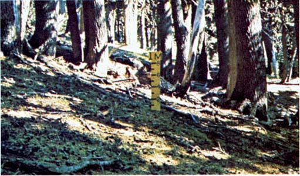
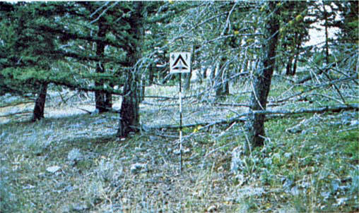
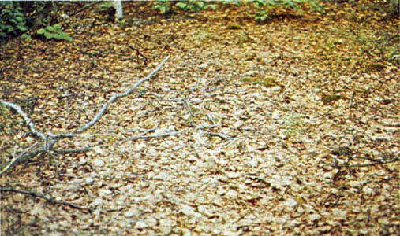

Slow-burning ground fires with low flame lengths are generally the case, although the fire may encounter an occasional “jackpot” or heavy fuel concentration that can flare up. Only under severe weather conditions involving high temperatures, low humidities, and high winds do the fuels pose fire hazards. Closed canopy stands of short-needle conifers or hardwoods that have leafed out support fire in the compact litter layer. This layer is mainly needles, leaves, and occasionally twigs because little undergrowth is present in the stand. Representative conifer types are white pine, and lodgepole pine, spruce, fir, and larch. Photographs 22, 23, and 24 illustrate the situations representative of this fuel.

Photo 22. Surface litter fuels in western hemlock stands of Oregon and
Washington.

Photo 23. Understory of inland Douglasfir has little fuel here to add
to dead-down litter load.

Photo 24. Closed stand of birch-aspen with leaf litter compacted.